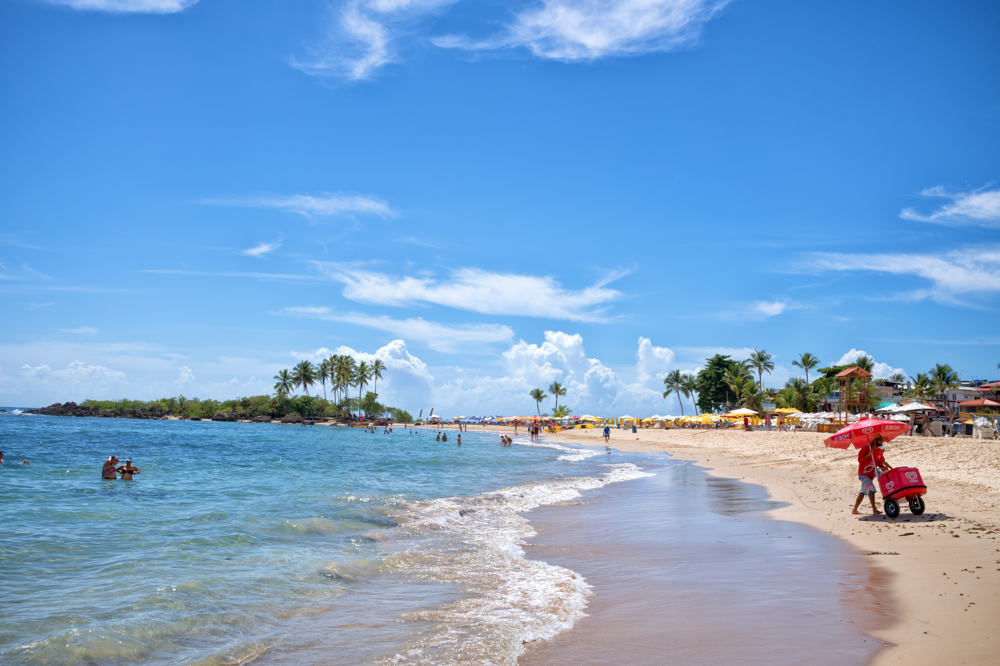

Ilha sem carro na Bahia — praias numeradas de água cristalina, Boipeba, tirolesa e noites animadas à beira-mar
Cada praia tem sua própria personalidade — escolha a sua
A praia desta foto — a mais popular e animada de Morro. Barraquinhas coloridas, pousadas frente ao mar, agito de dia e de noite. A vida noturna acontece aqui, com bares e shows à beira-mar. Cadeira + sombrinha: R$ 15–25/dia.
Mais calma que a Segunda, preferida por famílias e casais. Água mais cristalina, poucas ondas e boa estrutura de pousadas e restaurantes. O calçadão da Terceira tem as pousadas mais bem avaliadas da ilha, como Minha Louca Paixão (nota 9,5) e Chez Max.
As mais paradisíacas e menos frequentadas — pouquíssimas estruturas, natureza intocada e silêncio total. A Quinta Praia (Praia do Encanto) é quase deserta. Para chegar use traslado de barco ou quadriciclo — a pé é longe. Perfeitas para quem foge da multidão.
A mais próxima do cais de chegada. Menor e com menos estrutura de praia, mas tem a Fortaleza do Tapirundu (século XVI–XVIII) — ruínas muito fotogênicas com vista panorâmica. Ponto de partida da tirolesa do Farol. Pousada Bahia Bacana aqui tem piscina de borda infinita com vista para o mar.
Preços por pessoa — reservas com PIX têm 5–10% de desconto
O passeio mais procurado — dia inteiro de lancha. Saída às 9h30 da Terceira Praia, visita a Boipeba (piscinas naturais de Moreré, praias de Cueira e Boca da Barra), parada num flutuante em Canavieiras para ostras frescas e histórico de Cairu. Retorno às 17h.
Lancha da Terceira Praia contornando a ilha — passa pela Ilha do Caitá, Segunda e Primeira Praias, Farol e Fortaleza. Parada no paredão de argila e na Coroa (banco de areia no mar, na maré baixa). Almoço no povoado da Gamboa do Morro. Retorno pelo píer principal.
Tirolesa de 57 metros de altura que desce do Farol direto para a Primeira Praia — uma das mais altas do Brasil. Experiência de adrenalina com vista espetacular antes do mergulho no mar. Fica na área do centrinho, próximo à Fortaleza.
Explore as trilhas e praias mais distantes da ilha de quadriciclo — a forma mais divertida de chegar à Quarta e Quinta Praias. Ótimo para casais e grupos que querem explorar além do centrinho sem depender de barco.
Um dos pôres do sol mais famosos do Brasil — numa gruta natural com vista para o mar. Acesso apenas durante a maré baixa e com luz do dia. O espetáculo de cores no céu e no mar é absolutamente inesquecível. Gratuito e acessível a pé pelo calçadão.
Segunda e Terceira Praias concentram as melhores pousadas
O hotel mais romântico de Morro de São Paulo — na Terceira Praia, com piscina e vista para o mar. Apartamentos com banheira de hidromassagem de casal integrada à suíte, academia, spa e o maior restaurante da ilha. Aberta desde 1997, sofisticada e bem estruturada.
Pousadas frente ao mar na praia mais badalada. Pousada Bahia Tambor e Pousada Sambass (com piscina e vista para o mar) são as mais procuradas. Aqua by Sambass (nota 9,2) é destaque. Preços mais altos que outras praias pela localização privilegiada.
O centrinho da Vila tem pousadas mais acessíveis, a poucos minutos a pé das praias. Pousada Bahia Bacana (Primeira Praia, piscina de borda infinita) e Pousada Via Brasil são boas opções. Reserve direto via WhatsApp para descontos de 10–15% sem comissão de OTAs.
Segunda Praia, Terceira Praia ou Vila — compare preços com cancelamento gratuito
Ver disponibilidade no Booking.com →Tudo chega por barco — preços acima da média, mas a experiência compensa
A rua principal do centrinho concentra restaurantes de todos os estilos — frutos do mar, massas, carnes e culinária baiana. Nível conforto: almoço em restaurantes à praia e jantar mais elaborado aqui. Custo médio diário de R$ 150–250 por pessoa.
Para economizar, os pratos feitos (PF) nas ruas laterais saem por R$ 35–50 — a melhor pedida para quem quer comer bem sem gastar muito. Outro truque: almoçar em Boipeba durante o passeio Volta à Ilha, onde os preços são menores que na Vila.
Para uma noite especial, Morro tem restaurantes renomados com pratos de lagosta, camarão e vinhos. Custo médio diário de luxo: a partir de R$ 300 por pessoa. A dica é reservar com antecedência nos restaurantes mais concorridos, especialmente em alta temporada.
Durante o passeio Volta à Ilha, a parada no flutuante de Canavieiras para degustar ostras frescas direto do mar é um dos momentos mais memoráveis do roteiro. As ostras são abertas na hora e servidas com limão — preço incluso no passeio ou avulso no flutuante.
Só de barco — sem estrada para Morro de São Paulo
Saídas do Terminal Marítimo de Salvador às 9h e 14h30, retorno às 11h30 e 15h. Viagem de aproximadamente 2h. Confortável e direto — a melhor opção para quem está no centro de Salvador. Reserve com antecedência em alta temporada.
Van com ar-condicionado até Valença + lancha para Morro (20–30 min). Saídas de Salvador às 6h, 10h, 12h25 e 15h25. De Morro para Salvador às 9h30 e 15h30. Mais rápido que o catamarã e mais prático para quem não está no centro de Salvador.
Como não há carros, sua mala é transportada por carrinhos do cais até a pousada. Custo: R$ 15–25. Vale muito a pena se você tem mala grande — subir as escadas e ruas de areia com mala pesada é cansativo. Combine com o carregador na chegada ao cais.